7115064191_hw2.py ｜ GitHub：A0966411725-png/HW2-Multiple-Linear-regressionprice。特徵數同時符合作業要求的 10–20 個，以及作業頁補充建議的 14–39 個。（因為沒有 Kaggle API 金鑰，檔案改從 GitHub 鏡像 Shreyas3108/house-price-prediction 下載，筆數與欄位都和 Kaggle 原檔相同。）| 模型 | 特徵數 | Test R²(log) | 5-fold CV R² | RMSE (USD) | MAPE | 95% PI 覆蓋率 |
|---|---|---|---|---|---|---|
| M1 單純線性回歸 | 1 | 0.453 | 0.455 | 296,181 | 33.1% | – |
| M2 多元線性回歸（全部） | 17 | 0.775 | 0.772 | 187,262 | 19.8% | – |
| M3 多元線性回歸（特徵選擇後） | 12 | 0.761 | 0.761 | 195,199 | 20.3% | 94.4% |
| M4 = M3 + zipcode one-hot | 12+69 | 0.878 | 0.879 | 142,491 | 13.7% | 94.0% |
| M5 = 多項式回歸（二次項）+ zipcode | 87+69 | 0.887 | 0.889 | 134,921 | 13.1% | – |
| HistGradientBoosting（主流解法對照） | 18 | 0.905 | 0.903 | 137,215 | 11.6% | – |
問題：買方、賣方與仲介都需要一個「合理成交價」的參考。單一的點估計不夠，決策者還需要知道價格可能落在哪個範圍，才能判斷開價是否偏高、議價空間多大。
| 利害關係人 | 需求 | 模型提供的資訊 |
|---|---|---|
| 買方 | 判斷開價是否合理 | 預測價與 95% 預測區間；高於區間上限代表可能買貴 |
| 賣方 / 仲介 | 訂定開價、說明房屋價值來源 | 各因素的百分比影響（係數解讀），例如等級 +1 級約 +21% |
| 估價 / 貸款機構 | 估價要可解釋、可稽核 | 線性模型的係數、p 值、信賴區間都可以逐項檢查 |
目標：以線性回歸建立可解釋的房價模型，回答：(1) 哪些因素最影響房價、影響多大？(2) 給定一間房子的條件，預測價格與 95% 預測區間。
成功標準（在第 5.5 節逐項檢核）：測試集 R² ≥ 0.75、MAPE ≤ 20%；95% 預測區間的實際覆蓋率在 93–97% 之間；5-fold CV 與測試集結果一致（不過擬合）；係數方向符合常識。
| 欄位 | 意義 | 資料型態（L4-2 量尺） | 範圍 |
|---|---|---|---|
| price（目標） | 成交價（美元） | 比例（ratio） | $75K – $7.7M，中位數 $450K |
| bedrooms / bathrooms | 臥室數 / 衛浴數（0.5 = 只有馬桶洗手台） | 比例（離散計數） | 0–33 / 0–8 |
| sqft_living / sqft_lot | 室內面積 / 土地面積（平方英尺） | 比例 | 290–13,540 / 520–1.65M |
| sqft_above / sqft_basement | 地上面積 / 地下室面積（兩者相加 = sqft_living） | 比例 | 290–9,410 / 0–4,820 |
| sqft_living15 / sqft_lot15 | 最近 15 戶鄰居的平均室內 / 土地面積 | 比例 | 399–6,210 / 651–871,200 |
| floors | 樓層數 | 比例（離散） | 1–3.5 |
| waterfront | 是否臨水 | 名目（nominal，二元） | 0/1（0.75% 為 1） |
| view | 景觀評分 | 順序（ordinal） | 0–4 |
| condition | 屋況 | 順序 | 1–5 |
| grade | King County 建築品質等級 | 順序 | 1–13 |
| yr_built / yr_renovated | 建造年 / 翻修年（0 = 未翻修） | 區間（interval，年份可加減、不可乘除） | 1900–2015 |
| zipcode | 郵遞區號 | 名目（數字大小沒有意義 → 需 one-hot） | 70 個區 |
| lat / long | 緯度 / 經度 | 區間 | 47.16–47.78 / −122.52 – −121.315 |
log(price) 為建模目標。sqft_living(0.70)、grade(0.67)、sqft_above(0.61)、sqft_living15(0.59)、bathrooms(0.53)。sqft_basement = sqft_living − sqft_above 為完全共線，需處理多重共線性。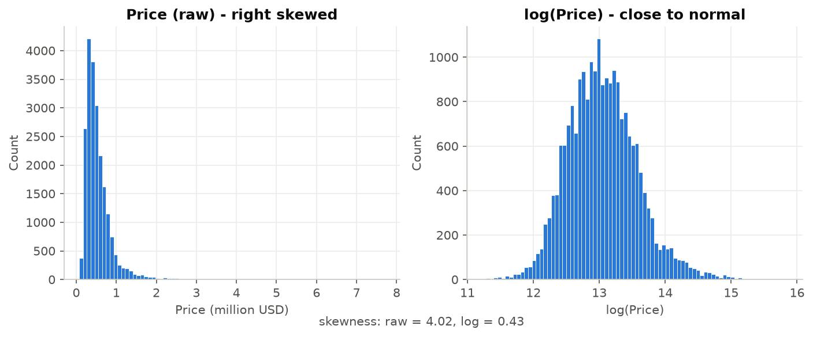
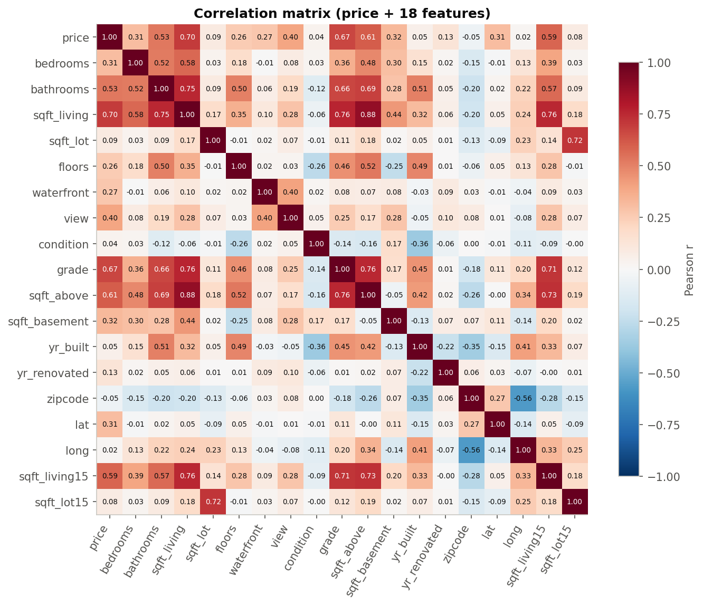
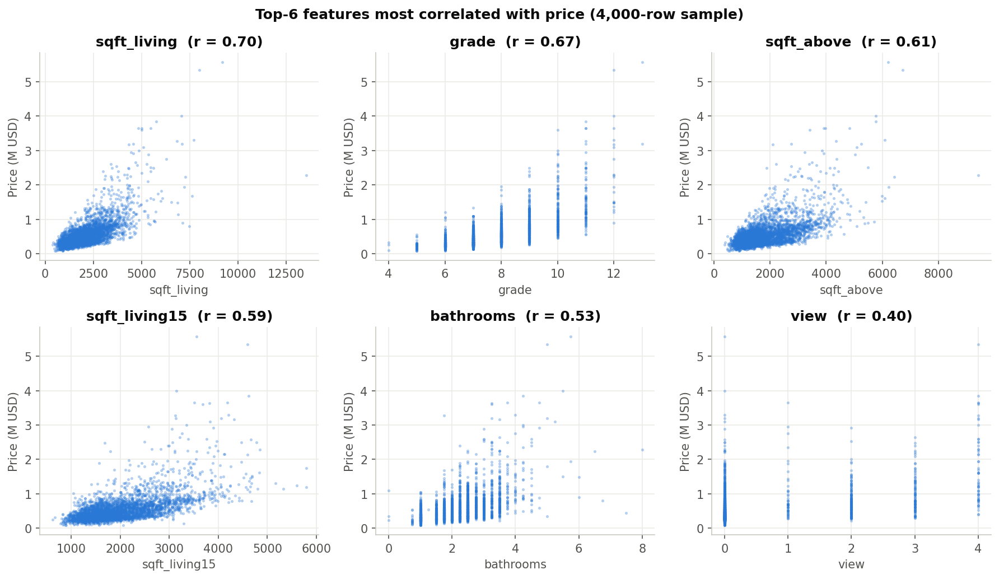
log_price = log(price)，讓殘差較接近常態、變異數較穩定，係數可解讀為「百分比變化」。house_age = 成交年 − yr_built；is_renovated = yr_renovated > 0；has_basement = sqft_basement > 0；面積欄位全部取 log。drop_first=True），避開 dummy variable trap：若 70 個都放，最後一個會等於 1 減去其他所有虛擬變數，和截距完全共線。順序變數（grade、condition、view）保留數值，因為大小有意義。處理後共有 17 個數值候選特徵：bedrooms, bathrooms, log_sqft_living, log_sqft_lot, floors, waterfront, view, condition, grade, log_sqft_above, has_basement, house_age, is_renovated, lat, long, log_sqft_living15, log_sqft_lot15。
對 17 個候選特徵，使用課程 L6 介紹的各類方法（All-in、Stepwise、Score selection、Lasso）交叉驗證：
| 方法 | 做法 | 結果 |
|---|---|---|
| 相關分析 | |r| 與 log_price | grade、log_sqft_living、log_sqft_living15 最強 |
| VIF | 變異數膨脹因子 > 5 代表共線 | log_sqft_living / log_sqft_above (≈19.6)、log_sqft_lot / lot15 (≈6.9) |
| Backward Elimination | OLS 逐步移除 p > 0.05 | 移除 long（p = 0.81） |
| RFECV | 遞迴特徵消除 + 5-fold CV | 最佳 16 個；12 個以後 CV R² 幾乎不再增加 |
| LassoCV | L1 正則化（α = 0.00037） | long 係數被壓到接近 0（−0.0002） |
| Forward Stepwise（佐證） | 每步加入讓 AIC 最低的特徵 | 前 4 名 grade → lat → log_sqft_living → house_age；第 12 個之後 Adj R² 只再增加 0.002 |
| Best subset（Score selection，佐證） | 暴力搜尋：217 − 1 = 131,071 組特徵全部用 OLS 擬合，選 BIC 最低 | BIC 最佳為 16 個（只刪 long）；用 Gram 矩陣求解，131,071 次擬合約 3 秒 |
決策規則：三種方法（Backward、RFECV、Lasso）中至少 2 票保留 → 再以 VIF ≤ 5 迭代修剪：每次取 VIF 最高的特徵與其最相關的夥伴，刪掉與目標相關較弱者。Forward Stepwise 與 Best subset 不參與投票，只用來檢查「留多少個特徵才划算」。
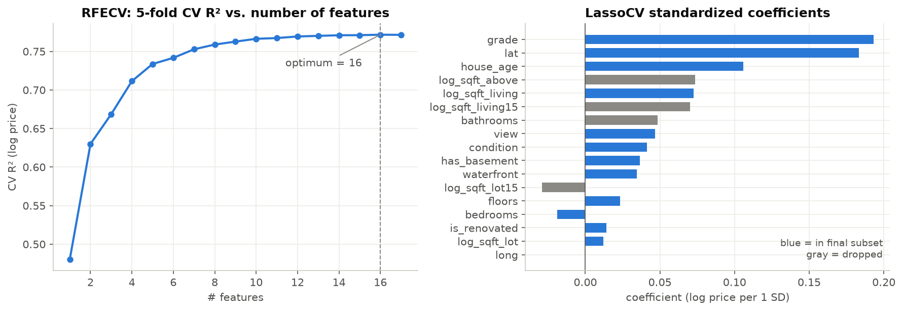
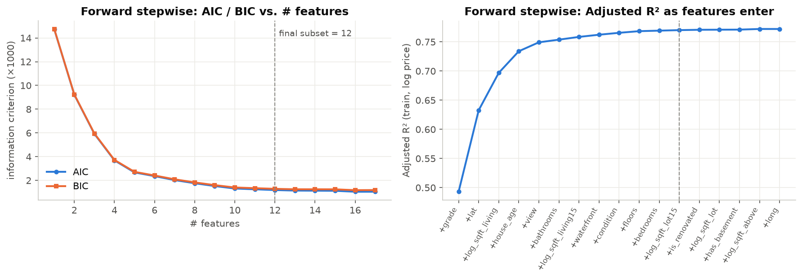
和 Forward Stepwise 的比較：Forward Stepwise 挑出的前 12 個特徵裡有 9 個和我們的子集相同；差別在它選了 bathrooms、log_sqft_living15、log_sqft_lot15，這三個都和已選的面積欄位高度相關。它的 12 特徵模型訓練集 Adj R² 是 0.770，我們的 M3 是 0.761，只差 0.009，但 M3 的最大 VIF 只有 4.4，係數比較穩定、也比較好解讀。我們選擇犧牲一點點擬合度，換取可解釋性。
參考課程「50 Startup」範例報告的格式，把每一種方法選出的特徵分別訓練線性回歸，用同一份測試集比較 MSE 與 R²：
| 方法 | 刪除的特徵 | 特徵數 | MSE (log) | RMSE (USD) | R² (log) | 最大 VIF |
|---|---|---|---|---|---|---|
| All-in（不做選擇） | - | 17 | 0.0630 | 187,262 | 0.775 | 19.6 |
| Backward Elimination（p < 0.05） | long | 16 | 0.0630 | 187,284 | 0.775 | 19.6 |
| Forward Selection（BIC 最佳） | long | 16 | 0.0630 | 187,284 | 0.775 | 19.6 |
| RFECV | long | 16 | 0.0630 | 187,284 | 0.775 | 19.6 |
| LassoCV（|係數| > 0.01） | long | 16 | 0.0630 | 187,284 | 0.775 | 19.6 |
| Best subset（暴力搜尋，BIC 最佳） | long | 16 | 0.0630 | 187,284 | 0.775 | 19.6 |
| 投票 + VIF ≤ 5（本作業 M3） | bathrooms, log_sqft_above, long, log_sqft_living15, log_sqft_lot15 | 12 | 0.0668 | 195,199 | 0.761 | 4.4 |
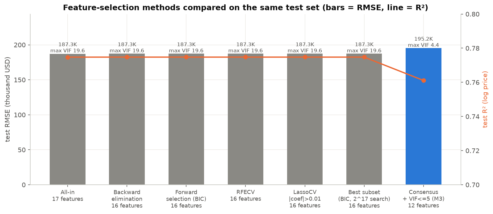
解讀：五種「純資料導向」的方法（Backward、Forward、RFECV、Lasso、暴力搜尋）全部收斂到同一組 16 個特徵（只刪掉 long），測試 R² 0.775；但它們都同時保留 log_sqft_living 與 log_sqft_above 這類共線組合，最大 VIF 高達 19.6，係數無法單獨解讀。M3 多加了 VIF ≤ 5 的限制，只用 12 個特徵，R² 少 0.014（RMSE 多約 $7.9K），換來每個係數都穩定、可解讀。準確度的缺口則靠加入 zipcode（M4，R² +0.117）補回來，效果遠大於這 0.014。
下表依 L6 Part 2 的格式，列出 Forward Selection 依序加入 1 到 17 個特徵時的訓練／測試結果：
| 特徵數 | 加入的特徵 | Train R² | Test R² | Test RMSE (USD) |
|---|---|---|---|---|
| 1 | + grade | 0.4930 | 0.4972 | 276,099 |
| 2 | + lat | 0.6327 | 0.6313 | 261,097 |
| 3 | + log_sqft_living | 0.6970 | 0.6980 | 242,637 |
| 4 | + house_age | 0.7341 | 0.7314 | 219,473 |
| 5 | + view | 0.7494 | 0.7497 | 202,827 |
| 6 | + bathrooms (不在 M3) | 0.7539 | 0.7542 | 195,379 |
| 7 | + log_sqft_living15 (不在 M3) | 0.7587 | 0.7612 | 194,863 |
| 8 | + waterfront | 0.7624 | 0.7657 | 188,809 |
| 9 | + condition | 0.7657 | 0.7689 | 187,501 |
| 10 | + floors | 0.7686 | 0.7706 | 189,245 |
| 11 | + bedrooms | 0.7695 | 0.7723 | 188,634 |
| 12 | + log_sqft_lot15 (不在 M3) | 0.7704 | 0.7739 | 188,007 |
| 13 | + is_renovated | 0.7710 | 0.7740 | 187,911 |
| 14 | + log_sqft_lot | 0.7711 | 0.7742 | 188,113 |
| 15 | + has_basement | 0.7713 | 0.7742 | 188,326 |
| 16 | + log_sqft_above (不在 M3) | 0.7724 | 0.7748 | 187,284 |
| 17 | + long (不在 M3) | 0.7724 | 0.7748 | 187,262 |
前 5 個特徵（grade、lat、面積、屋齡、景觀）測試 R² 就到 0.750；第 12 個之後測試 R² 只再增加 0.001，RMSE 幾乎不變。訓練與測試 R² 在每一步都幾乎相同，代表沒有 overfit（見 5.2 節）。
作業頁建議比較 SelectKBest、RFE、Sequential Feature Selection、Lasso、permutation importance，並選出不同數量的特徵，只使用訓練資料。本資料集處理後有 17 個候選特徵，所以比較 k = 5, 8, 12, 14 個。每格上方是測試集 R²（log），下方是該子集的最大 VIF：
| 方法（做法） | k = 5 | k = 8 | k = 12 | k = 14 |
|---|---|---|---|---|
| SelectKBest 單變量 F 檢定（f_regression），挑和目標相關最強的 k 個 | 0.562 VIF 5.6 | 0.732 VIF 6.8 | 0.738 VIF 19.4 | 0.742 VIF 19.4 |
| RFE 線性回歸反覆刪掉係數最小的特徵，直到剩 k 個 | 0.735 VIF 2.5 | 0.761 VIF 4.4 | 0.771 VIF 19.3 | 0.774 VIF 19.6 |
| Sequential FS sklearn SequentialFeatureSelector，每步加入讓 5-fold CV R² 最高的特徵 | 0.750 VIF 2.6 | 0.766 VIF 4.1 | 0.774 VIF 5.2 | 0.774 VIF 6.7 |
| Lasso LassoCV 標準化係數絕對值最大的 k 個 | 0.731 VIF 4.7 | 0.761 VIF 6.2 | 0.773 VIF 17.8 | 0.774 VIF 19.6 |
| Permutation importance 在訓練集內再切 25% 驗證，打亂某特徵後 R² 下降越多越重要 | 0.718 VIF 2.8 | 0.761 VIF 6.2 | 0.773 VIF 17.8 | 0.774 VIF 19.6 |
| 本作業 M3（三法投票 + VIF ≤ 5） | 0.761 VIF 4.4 |
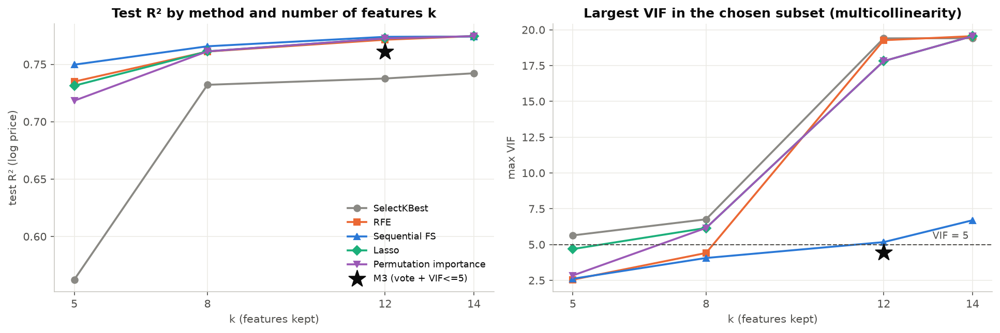
| 特徵 | 係數 | 解讀 |
|---|---|---|
| log_sqft_living | 0.460 | 室內面積 +10% → 房價約 +4.5%（彈性） |
| grade | 0.191 | 建築等級每 +1 級 → 房價約 +21% |
| waterfront | 0.397 | 臨水 → 房價約 +49% |
| lat | 1.337 | 緯度 +0.1°（往北、接近西雅圖市區）→ 約 +14% |
| view | 0.071 | 景觀評分每 +1 → 約 +7% |
| floors | 0.069 | 每多一層樓 → 約 +7% |
| condition | 0.060 | 屋況每 +1 → 約 +6% |
| is_renovated | 0.074 | 曾翻修 → 約 +8% |
| house_age | 0.0032 | 控制品質後，老屋略貴（多位於成熟市區） |
| bedrooms | −0.018 | 面積固定下房間越多 → 每間越小，價格略降 |
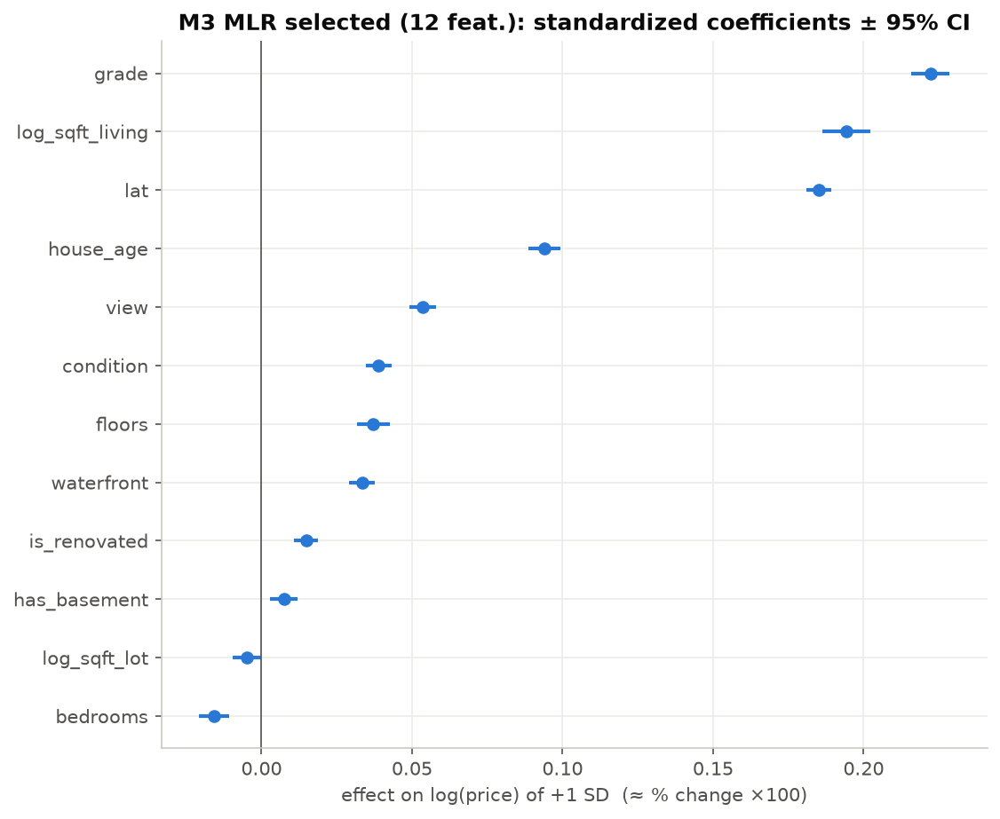
課程 L6 Step 4 要求用 Optuna 優化模型。線性回歸本身沒有超參數，所以對 M4 的設計改用 Elastic Net（同時含 L1 與 L2 懲罰），讓 Optuna 的 TPE 演算法在 40 次試驗中搜尋兩個參數，目標是 5-fold CV R² 最大：
alpha（正則化強度）：10−5 – 10−1，對數尺度l1_ratio：0（純 Ridge）– 1（純 Lasso）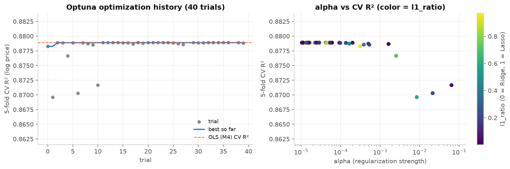
結果：最佳參數為 alpha = 1.1×10−5、l1_ratio ≈ 0，CV R² 0.8789，和不加懲罰的 OLS（0.8789）完全相同；alpha 越大 R² 越低。也就是說，Optuna 確認 M4 不需要正則化：資料有 17,135 筆、特徵已經過 VIF 篩選，OLS 本身就沒有 overfit。（技術細節：Elastic Net 預先計算 Gram 矩陣後，每次訓練從約 18.7 秒降到 0.04 秒，整個主程式 1–2 分鐘跑完。）
課程 L5 列出的線性回歸形式還包含多項式回歸。M5 把 M3 的 12 個特徵（先減去平均值）展開成二次項：12 個一次項 + 9 個平方項 + 66 個兩兩交互項（3 個 0/1 變數的平方等於自己，已去除），共 87 項，再加 69 個 zipcode 虛擬變數。模型對「參數」仍是線性的，所以仍屬於線性回歸，用 OLS 求解。
結果：測試 R² 0.887、CV R² 0.889、RMSE $134,921、MAPE 13.1%。比 M4 再進步（R² +0.009、RMSE −$7.6K），而且美元尺度的 RMSE 比 HistGradientBoosting（$137,215）還低。代價是 156 個係數難以逐一解讀，所以部署仍選 M4，M5 用來證明「線性模型加上交互作用後，可以追上樹模型」。
作業允許嘗試 Auto Regression，所以我們也做了測試。不過 AR 是時間序列模型，用變數自己過去的值預測未來；本資料是「每間房子一筆」的橫斷面資料，AR 沒辦法預測個別房屋，只能預測整體市場的價格走勢。做法：把成交價彙總成每週中位數（55 週），用前 47 週訓練、AIC 選出落後階數 p = 3，預測最後 8 週。
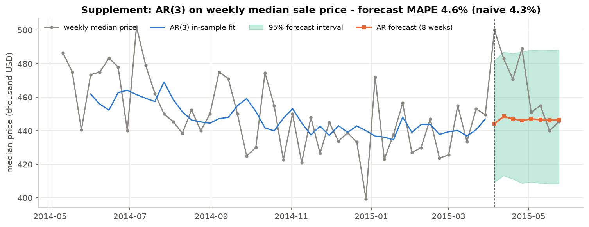
結論：每週中位數的波動主要是雜訊，加上 2015 年 4 月的春季旺季跳升，這種季節性只有 55 週的資料學不出來，所以 AR 贏不了 naive 預測。房價主要由房屋本身的條件決定，因此主模型採用多元線性回歸，AR 只作為補充。
| 指標 | 意義 | 解讀 |
|---|---|---|
| MSE | 平均平方誤差 = mean((y − ŷ)²) | 越小越好；誤差平方，對大誤差特別敏感 |
| RMSE | √MSE，和目標同單位（美元） | 越小越好；「典型」預測誤差的大小 |
| MAE | 平均絕對誤差 = mean(|y − ŷ|) | 越小越好；不受少數極端值影響 |
| MAPE | 平均絕對百分比誤差 | 越小越好；不同價位的房子可以公平比較 |
| R² / Adj R² | 模型解釋的變異比例；Adj R² 會扣除特徵數的影響 | 越接近 1 越好；Adj R² 避免「特徵越多 R² 越高」的假象 |
| 5-fold CV R² | 訓練集切 5 份輪流驗證的平均 R² | 和測試 R² 接近 → 結果穩定、沒有 overfit |
模型以 log(price) 訓練，所以 R² 與 MSE 同時報告 log 尺度，RMSE、MAE、MAPE 則還原成美元。
| 模型 | R²(log) | Adj R² | CV R² (mean±sd) | MSE(log) | R²(USD) | RMSE | MAE | MAPE |
|---|---|---|---|---|---|---|---|---|
| M1 Simple LR | 0.453 | 0.453 | 0.455±0.008 | 0.1530 | 0.420 | 296,181 | 173,926 | 33.1% |
| M2 MLR all (17) | 0.775 | 0.774 | 0.772±0.006 | 0.0630 | 0.768 | 187,262 | 110,553 | 19.8% |
| M3 MLR selected (12) | 0.761 | 0.760 | 0.761±0.006 | 0.0668 | 0.748 | 195,199 | 113,288 | 20.3% |
| M4 MLR + zipcode | 0.878 | 0.876 | 0.879±0.003 | 0.0341 | 0.866 | 142,491 | 76,678 | 13.7% |
| Ridge (M4 design) | 0.878 | – | 0.879±0.003 | 0.0341 | 0.866 | 142,496 | 76,681 | 13.7% |
| Lasso (M4 design) | 0.877 | – | 0.878±0.003 | 0.0343 | 0.865 | 143,021 | 77,072 | 13.8% |
| Elastic Net（Optuna） | 0.878 | – | 0.879±0.003 | 0.0341 | 0.866 | 142,493 | 76,679 | 13.7% |
| M5 多項式 + zipcode | 0.887 | 0.882 | 0.889±0.003 | 0.0317 | 0.880 | 134,921 | 73,295 | 13.1% |
| Random Forest | 0.892 | – | 0.889±0.004 | 0.0301 | 0.861 | 144,842 | 70,493 | 12.3% |
| HistGradientBoosting | 0.905 | – | 0.903±0.002 | 0.0265 | 0.876 | 137,215 | 64,868 | 11.6% |
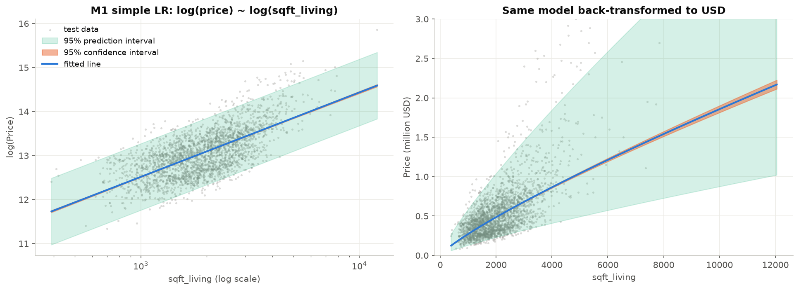
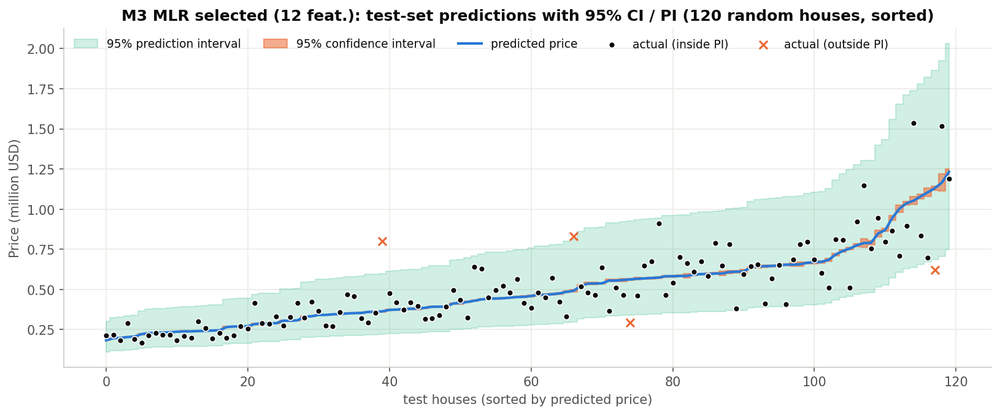
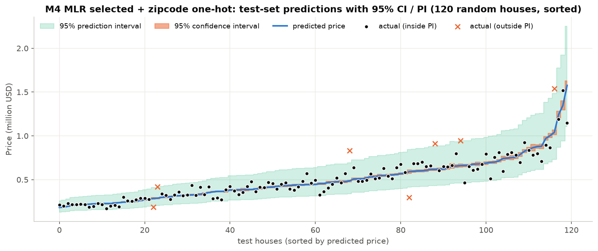
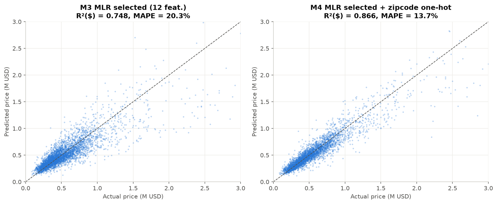
依課程 L6 Step 4，畫出訓練與測試（驗證）的誤差曲線判斷模型是否 overfit 或 underfit：
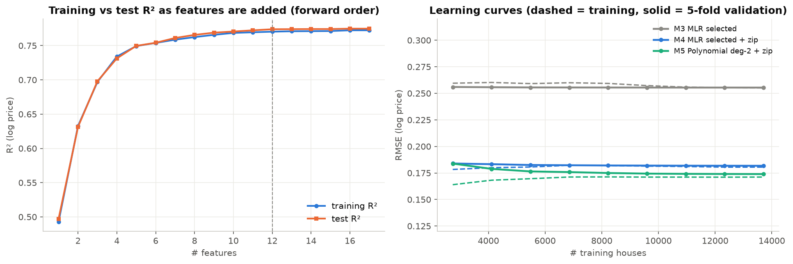
課程 L6 列出多元線性回歸的五個前提假設，逐一用統計檢定或圖形檢查：
| 假設 | 檢查方法 | 結果 | 判讀 |
|---|---|---|---|
| 1. Linearity（線性） | 殘差 vs 預測值圖（圖 16 左） | 殘差沿 0 上下分布，沒有明顯的彎曲趨勢 | 通過；面積取 log 後與 log(price) 呈線性 |
| 2. Homoscedasticity（變異數同質） | Breusch-Pagan | LM = 605，p < 0.001 | 有異質變異 → 改用 HC3 穩健標準誤重新檢定：12 個係數中 11 個仍 p < 0.05（只有 log_sqft_lot 變成 p = 0.078），結論不受影響 |
| 3. Multivariate normality（殘差常態） | Jarque-Bera、Q-Q 圖（圖 16 右） | JB = 796，p < 0.001；偏態 0.15、峰度 4.0 | 尾部略厚；樣本 17,135 筆，依中央極限定理係數推論仍可靠 |
| 4. Independence of errors（誤差獨立） | Durbin-Watson | 1.99 | 通過（接近 2 = 無自相關） |
| 5. Lack of multicollinearity（無共線性） | VIF / 標準化條件數 | 最大 VIF 4.44；條件數 4.4 | 通過（VIF < 5、條件數 < 30）；這正是 M3 用 VIF ≤ 5 修剪特徵的原因 |
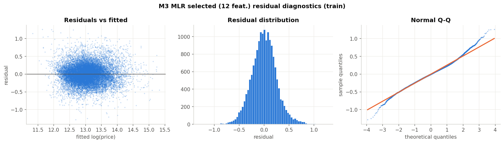
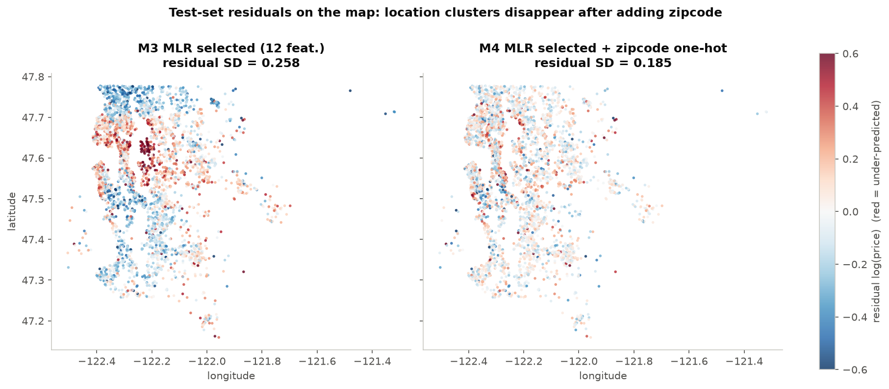
只看 95% 一個點不夠，所以再檢查 50%、68%、80%、90%、95%、99% 六種信賴水準下，測試集實際落在預測區間內的比例：
| 名目水準 | 50% | 68% | 80% | 90% | 95% | 99% |
|---|---|---|---|---|---|---|
| M3 實際覆蓋率 | 52.6% | 71.1% | 81.7% | 90.2% | 94.4% | 98.1% |
| M4 實際覆蓋率 | 57.4% | 73.5% | 83.4% | 90.5% | 94.0% | 97.6% |
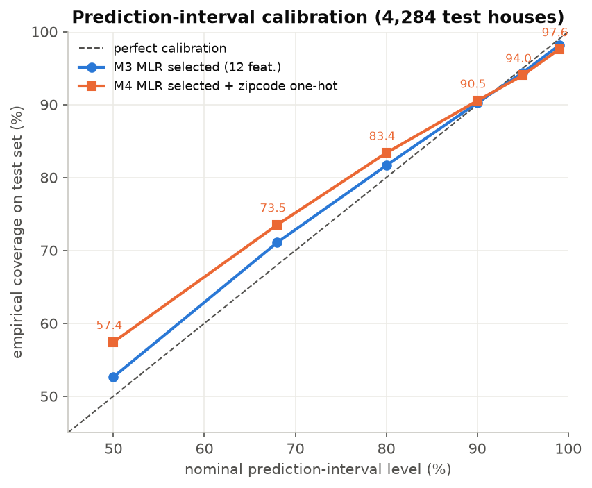
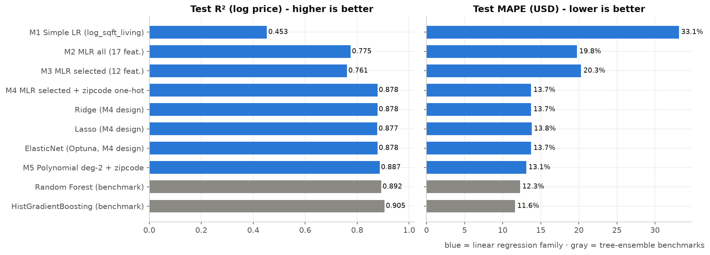
| 成功標準 | M3（12 特徵） | M4（+ zipcode） |
|---|---|---|
| 測試集 R² ≥ 0.75 | ✔ 0.761 | ✔ 0.878 |
| MAPE ≤ 20% | ✘ 20.3%（差 0.3 個百分點） | ✔ 13.7% |
| 95% PI 覆蓋率在 93–97% | ✔ 94.4% | ✔ 94.0% |
| CV 與測試一致（不過擬合） | ✔ 0.761 vs 0.761 | ✔ 0.879 vs 0.878 |
| 係數方向符合常識 | ✔ 面積、等級、臨水、景觀皆為正 | ✔ |
結論：M4 達成全部成功標準，作為部署模型；M3 用來解釋「哪些因素影響房價」。
model/house_price_mlr.pkl.gz。先用 remove_data() 去掉 statsmodels 存的訓練資料（34 MB → 58 KB，含解釋預測用的訓練集平均值），再用 gzip 壓縮成 40 KB。predict.py 提供 predict_price() 函式與命令列介面，輸入房屋條件即輸出預測價與 95% CI / PI：
$ python predict.py --sqft_living 2000 --grade 8 --zipcode 98052 --lat 47.68 Predicted price : $553,994 95% CI (mean) : $544,004 - $564,168 95% PI (house) : $388,300 - $790,393
依作業頁建議，用部署程式預測三間不在資料集裡的新房子：
| 新房子 | 主要條件 | 預測價 | 95% 預測區間 |
|---|---|---|---|
| A 一般住宅（Redmond） | 2,000 sqft、grade 8、3 房、1990 年建、zipcode 98052 | $553,994 | $388,300 – $790,393 |
| B 臨水豪宅（Mercer Island） | 3,500 sqft、grade 10、臨水、景觀 4、zipcode 98040 | $2,615,671 | $1,830,105 – $3,738,438 |
| C 小型老屋（南區） | 1,100 sqft、grade 6、2 房、1955 年建、zipcode 98168 | $193,660 | $135,683 – $276,412 |
predict.py --explain）因為模型是 log(price) 的線性回歸，預測價可以精確拆解成「一般房子的價格 × 每個特徵造成的百分比變化」。一般房子指所有特徵都在訓練集平均值、zipcode 效果也取平均，價格為 $465,592。以臨水豪宅 B 為例：
$ python predict.py --sqft_living 3500 --sqft_lot 15000 --grade 10 --waterfront 1 --view 4 \
--condition 4 --floors 2.0 --sqft_basement 1000 --yr_built 1985 --zipcode 98040 --lat 47.56 --bedrooms 4 --explain
Why? Typical King County house (all features at the training average): $465,592
waterfront +62.4% -> $756,049
zipcode 98040 +49.9% -> $1,133,128
log_sqft_living +33.9% -> $1,517,097
grade +30.3% -> $1,976,300
view +27.8% -> $2,525,050
...（其餘 8 個特徵各自影響都在 ±5% 以內）
= predicted price $2,615,671
這間房子比一般房子貴 5.6 倍，主要來自臨水（+62%）、Mercer Island 的地段（+50%）、面積（+34%）、建築等級（+30%）與景觀（+28%），其餘特徵影響都很小。這種逐項拆解是線性回歸相對於樹模型最大的優勢：估價結果可以向買賣雙方說明「貴在哪裡」。
results/run_log.txt。此資料集在 Kaggle 是 Dataset（不是 Competition），沒有排行榜名次，所以改和網路上公開的解法（Kaggle Notebook、GitHub、論文，見第 9 節 NotebookLM 的 7 個來源）回報的 R² 對照：
| 常見做法 | 網路上回報的 R² | 本作業對應結果 |
|---|---|---|
| 單純線性回歸（price ~ sqft_living） | ≈ 0.49 | M1：0.453（log 尺度，已移除錯誤資料） |
| 多元線性回歸（原始 price、未處理共線性） | ≈ 0.65–0.70 | M2：0.775、M3：0.761 |
| 多項式 + Ridge 正則化 | ≈ 0.70–0.75 | M5 多項式：0.887；Ridge／Elastic Net（Optuna）：0.878 |
| log 轉換 + zipcode 虛擬變數 | — | M4：0.878、MAPE 13.7% |
| 樹模型（Random Forest、XGBoost、LightGBM） | ≈ 0.85–0.87 | RF：0.892、HistGradientBoosting：0.905 |
| 面向 | 多元線性回歸（M4） | 梯度提升樹（HGB） |
|---|---|---|
| 準確度 | R² 0.878、MAPE 13.7% | R² 0.905、MAPE 11.6% |
| 可解釋性 | 每個係數都可以讀成「百分比影響」，有 p 值與信賴區間 | 黑盒，需要 SHAP 等工具輔助 |
| 預測區間 | 理論公式直接給出，實測覆蓋率 94%，校準良好 | 需要額外的 quantile regression 或 conformal prediction |
| 非線性、交互作用 | 需要人工設計（log、zipcode one-hot） | 自動學習 |
比較結論：樹模型準確度最高，但 M4 線性回歸只差約 2–3 個百分點（R² 0.878 vs 0.905），而且已經超過網路上常見的樹模型成績（0.85–0.87）；加上交互作用的 M5（R² 0.887）在美元 RMSE 上甚至比 HistGradientBoosting 還低。線性回歸能做到這個程度，關鍵是三件事：log 轉換、系統化的特徵選擇、zipcode 地段固定效果。若目標是解釋與估價範圍，線性回歸更合適；若只求點預測準確度，則選梯度提升樹。
7115064191_ai_conversation.pdf。作業分四段完成：第一段建立完整分析，第二段依評分標準補強，第三段對照課程講義補強，第四段對照作業頁新增的建議補強。只收錄和作業內容有關的對話。kc_house_data.csv，寫好並執行主程式 7115064191_hw2.py：
| 模型 | R²(log) | MAPE |
|---|---|---|
| M1 單純線性回歸 | 0.453 | 33.1% |
| M2 MLR 全部 17 個特徵 | 0.775 | 19.8% |
| M3 MLR 選出的 12 個特徵 | 0.761 | 20.3% |
| M4 M3 + zipcode | 0.878 | 13.7% |
| HistGradientBoosting（對照） | 0.905 | 11.6% |
predict.py 部署程式，以及 PDF 報告。另外發現模型檔有 34 MB（statsmodels 會存訓練資料），用 remove_data() 縮到 60 KB。predict.py 加上 --explain，把預測價精確拆成「一般房子 $465,592 × 每個特徵的百分比影響」。以 Mercer Island 臨水豪宅為例：預測 $2,615,671，主要來自臨水 +62%、地段 +50%、面積 +34%、等級 +30%、景觀 +28%。報告另列三間新房子的預測與 95% 預測區間。第一次執行時，因為 remove_data() 之後係數失去欄位名稱而出錯，改成在 remove_data() 之前先算好 zipcode 平均效果。常見資料前處理與特徵工程：主流解法多先處理缺失值（以中位數或平均值補值）、刪除不相關的 ID 欄位，並用 IQR 剔除極端離群值。房價呈右偏分布，會先做對數轉換與標準化；地理位置特徵（zipcode、lat、long）對價格影響很大，需要分組或類別編碼；也必須篩掉高度共線的面積欄位（如 sqft_living 與 sqft_above）。
使用模型與成效 (R²)：單純線性回歸只能解釋約 49% 的變異（R² ≈ 0.49）；多元線性回歸可提升到 R² ≈ 0.65–0.70；加入二次多項式和 Ridge 正則化後約 0.70–0.75；樹狀集成模型（隨機森林、XGBoost/LightGBM）表現最好，R² 可達 0.85–0.87。
線性模型與樹模型比較：線性模型結構簡單、計算快、可解釋性高，也能直接算出統計預測區間，但無法自動捕捉非線性交互作用和地理空間的差異。樹模型能擬合非線性關係與特徵交互作用，對共線性也較不敏感，但屬於黑盒模型（需搭配 SHAP 解釋），也很難直接輸出傳統的參數式預測區間。
對本作業的啟示：多元線性回歸是建構預測區間最直接的工具。要縮小和樹模型的準確度差距，前處理必須對房價做 log 轉換以符合殘差常態假設，用 VIF 或逐步回歸排除共線性變數，並對 zipcode 等區域特徵適當編碼，才能在保有區間估計優勢的同時達到最好的預測成效。
| 步驟 | 目的 | 本作業做了什麼 | 結果 |
|---|---|---|---|
| Business Understanding | 定義問題與成功標準 | 估價 + 95% 預測區間；訂出 R²、MAPE、PI 覆蓋率標準 | 5 項成功標準（5.5 節檢核） |
| Data Understanding | 認識資料與品質 | 欄位字典、資料型態、偏態、相關係數、共線性檢查 | 價格右偏、面積欄位共線、zipcode 是名目變數 |
| Data Preparation | 清理、轉換、切分 | 去除重複與錯誤資料、log 轉換、特徵工程、one-hot（避開 dummy trap）、80/20 切分 | 21,419 筆、17 個候選特徵 |
| Modeling | 選特徵、建模型 | 十種以上特徵選擇方法比較（含作業頁建議的 SelectKBest、RFE、SFS、Lasso、permutation importance）；M1–M5、Ridge、Lasso、Optuna Elastic Net、AR 補充、樹模型對照 | 12 個特徵；M4 R² 0.878、M5 R² 0.887 |
| Evaluation | 評估準確度與可信度 | MSE／RMSE／MAE／MAPE／R²、CV、overfit 曲線、五大假設、PI 校準 | M4 達成全部成功標準；PI 覆蓋 94% |
| Deployment | 讓模型可以被使用 | pickle + gzip 存檔、predict.py 命令列工具，預測新樣本並逐項解釋 | 輸入房屋條件 → 預測價與 95% CI／PI |